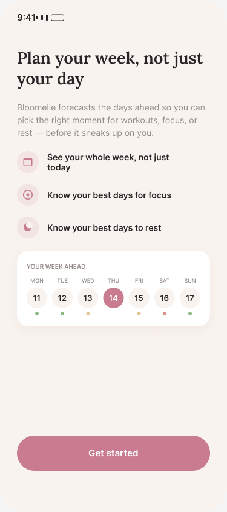
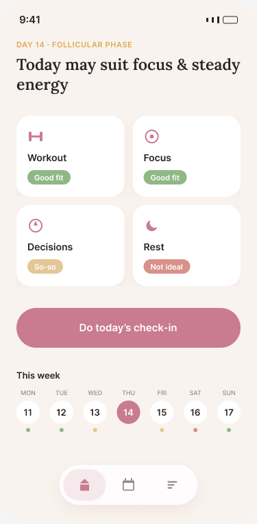
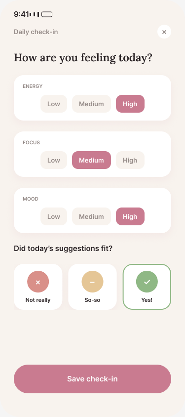

Plan your week, not just your day
Bloomelle forecasts the days ahead from your cycle so you can pick the right moment for workouts, focus work, big decisions, or rest — before it sneaks up on you. Not a symptom tracker.
Free · No account · Nothing leaves your phone
See your week, not just today
Most cycle tools tell you what's happening right now and leave you to remember it tomorrow. Bloomelle takes your last period start date and average cycle length and turns them into a 7-day-ahead forecast, so you can plan a workout, a big decision, or a lighter day before you get there — not after.



What's inside
Four simple pieces, nothing you have to fill in every day:
Week-ahead forecast
Your last period start date and average cycle length turn into today's phase plus a 7-day-ahead strip — no manual logging required.
Daily suggestions
Softened, non-prescriptive picks for workouts, focus work, big decisions, and rest — always "may suit," never a guarantee.
2-input setup
Just a start date and a cycle length to begin. Both stay editable, since most people don't have an exact 28-day cycle.
Daily check-in
A ten-second log of energy, focus, and mood, plus whether that day's suggestion actually fit — the ritual that makes this more than a one-time calculator.
Not a substitute for medical advice
Many people notice real patterns across their cycle, but the science behind phase-based performance is still limited and mixed — Bloomelle's forecast is a planning tool built around what you notice, not a diagnosis or a clinical recommendation. If something about your cycle concerns you, talk to a doctor rather than relying on an app.
Private by design
No account, no server, no sign-up. Your cycle dates and check-ins stay on your device. Bloomelle was built this way from day one — your data is yours, never a data set.
Frequently asked questions
Is Bloomelle a symptom tracker?
No. Bloomelle doesn't log symptoms day by day — it forecasts your coming week from your last period start date and average cycle length, and suggests which days may suit workouts, focus work, big decisions, or rest.
Is this based on science?
Many people notice real patterns across their cycle, but the research on phase-based performance is still limited and mixed. Bloomelle frames every suggestion as "may suit," never a guarantee, and it's a planning tool, not medical advice.
When will Bloomelle be available?
Bloomelle is currently in development, with no fixed release date yet. Check back on this page for updates.